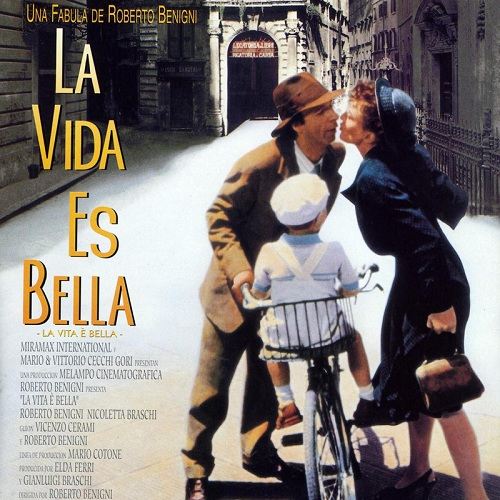
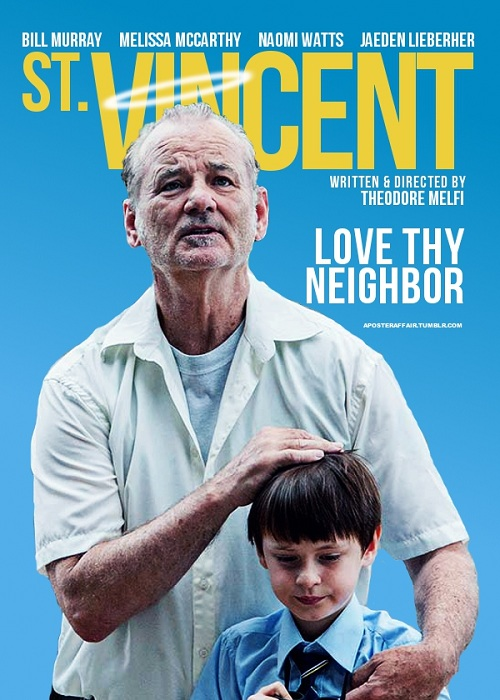

| La vita e bella | ||||||||
| Film | Description | |||||||
|---|---|---|---|---|---|---|---|---|
Life is Beautiful |
Plot
In 1939 Italy, Guido Orefice is a young Jewish man who is leaving his old life and going
to the city where his uncle lives for work. Guido is comical and sharp, making the best from each situation he encounters. From the start he falls in love with a girl Dora. Later he sees her again in the city where she is a teacher. Dora is set to be engaged to a rich but arrogant man. He is a local government official with whom Guido has run-ins from the beginning. Guido is still in love with Dora and performs many stunts in order to see her. Guido sets up many "coincidental" incidents to show his interest. Finally Dora sees Guido's affection and promise and gives in against her better judgement. He steals her from her engagement party on a horse, humiliating her fiancé and mother. Soon they are married and have a son, Giosué. Through the first part, the film depicts the changing political climate in Italy: Guido frequently imitates members of the National Fascist Party, skewering their racist logic and pseudoscientific reasoning (at one point, jumping onto a table to demonstrate his "perfect Aryan bellybutton"). However, the growing Fascist wave is also evident: the horse Guido steals Dora away on has been painted green and covered in antisemitic insults. Later during World War II, after Dora and her mother have reconciled, Guido, his Uncle Eliseo and Giosue are seized on Giosue's birthday. They and many other Jews are forced onto a train and taken to a concentration camp In the camp, Guido hides their true situation from his son. Guido explains to Giosue that the camp is a complicated game in which he must perform the tasks Guido gives him. Giosue is at times reluctant to go along with the game, but Guido convinces him each time to continue on. Guido sets up the concentration camp as a game for Giosue. Each of the tasks will earn them points and whoever gets to one thousand points first will win a tank. He tells him that if he cries, complains that he wants his mother, or says that he is hungry, he will lose points, while quiet boys who hide from the camp guards earn extra points. Guido uses this game to explain features of the concentration camp that would otherwise be frightening for a young child: the guards are mean only because they want the tank for themselves; the dwindling numbers of children (who are being killed in gas chambers) are only hiding in order to score more points than Giosue so they can win the game. He puts off Giosue's requests to end the game and return home by convincing him that they are in the lead for the tank, and need only wait a short while before they can return home with their tank.Despite being surrounded by the misery, sickness, and death at the camp, Giosue does not question this fiction because of his father's convincing performance and his own innocence. Guido maintains this story right until the end when, in the chaos of shutting down the camp as the Americans approach, he tells his son to stay in a sweatbox until everybody has left, this being the final competition before the tank is his. As the camp is in chaos Guido goes off to find Dora, but while he is out he is caught by a German soldier. An officer makes the decision to execute Guido. Guido is led off by the soldier to be executed. While the soldier is leading him to his death, Guido passes by Giosue one last time, still in character and playing the game. The next morning, Giosue emerges from the sweatbox as the camp is occupied by an American armored division. Giosue thinks he has won the game because Guido had told him that whoever got to one thousand points would get a tank. The captives in the concentration camp emerge from hiding. The prisoners travel to safety, accompanied by the Americans. While they are traveling, the soldiers allow Giosue to ride on the front of the tank with them. Giosue soon spots Dora in the procession leaving the camp. Giosue and Dora are reunited and are extremely happy to see each other. In the film, Giosue is a young boy; however, both the beginning and ending of the film are narrated by an older Giosue recalling his father's story of sacrifice for his family. | |||||||
| St. Vincent | ||||||||
| Film | Description | |||||||
|---|---|---|---|---|---|---|---|---|
St. Vincent |
PlotVincent MacKenna (Bill Murray) is a Vietnam War veteran and retiree living in Sheepshead Bay, Brooklyn who is the son of Irish immigrants. He is a grumpy alcoholic who smokes and gambles regularly. His wife, Sandy, (Donna Mitchell) developed Alzheimer's Disease years ago and can no longer recognize him, but he still does her laundry for her at the nursing home where she lives and visits her every week, posing as a doctor. Otherwise, Vincent's only other close friends are a pregnant Russian prostitute named Daka (Naomi Watts) and his cat, Felix, as he owes many people money. Despite leading a quiet and boring existence, Vincent has many acquaintances who like and respect him. One day, after Vincent's 30-year-old Chrysler Lebaron gets damaged by a tree branch resulting from his new neighbors moving in, Maggie Bronstein (Melissa McCarthy) and her 12-year-old son Oliver, (Jaeden Lieberher) meet Vincent. Maggie is a single mother fighting for custody after her husband had several affairs. Despite this, she is doing her best to provide for Oliver, who is ostracised and bullied at his Catholic school, but is nonetheless knowledgeable and friendly. On his first day at his school, Oliver's phone and house keys are stolen from his gym locker. Oliver asks Vincent if he can stay at his home until his mother comes home from work. Maggie is late and she pays Vincent for babysitting. Now that Vincent has money coming in, Vincent starts babysitting Oliver every day after school because Maggie often has to work late hours. Vincent's ideas of after-school activities involve visits to racetracks and bars, but eventually the mismatched pair begin to help each other mature.Vincent teaches Oliver how to fight, and he breaks his bully's nose, but the two soon become best friends. Vincent and Oliver quickly become good friends and a lucky bet at the racetracks help Vincent to pay off some of his debts. But things do not get any easier for Vincent, as he gambles away the rest of his money, hoping to make more to keep Sandy in her nursing home, as he is behind on payments. Vincent is also interrogated in his home by his loan sharks Zucko (Terrence Howard) and Antwan (James Andrew O'Connor), who both attempt to take Sandy's jewelry. Vincent suffers a stroke and Zucko and Antwan leave realizing it, but he needs hospitalization and physical therapy. Oliver, Maggie and Daka help Vincent to recover, but he becomes irritable and depressed after finding out that his wife has died while he was hospitalized. After Oliver's father,who is a lawyer, finds out about where Vincent has been taking him, he uses this to get joint custody with supervision, and Vincent is told that he can no longer see Oliver. But Oliver won't give up, so he chooses Vincent as his hero for his "Saints Among Us" project for his school, where he interviews everyone who knows Vincent and compiles his life story together, before naming Vincent as his saint. Daka has her baby and the film ends with all of them at the dinner table happily eating together. | |||||||